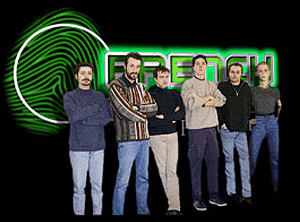

|
|
| Description :
French Touch is a group of 5 French people (one programmer and 4 graphists), who wish to create a new generation of high quality games for the Power Macintosh. Why developing games on the Mac and not on the PC ? Curiously, there a lack of 3D games on the Mac, but the hardware is there : there will soon be 2 millions G3 Macs (including the IMac) out there with outbreaking performances and 3D chips onboard... this represents many macs to sell game for. Yes, the Mac is primary a creation tool, not a gaming machine (if you want to play games, go and buy a console, not a PC), but we want to prove that the Mac is also a gaming plateform and owns better games: since you do better work with a Mac, you should end up with better games than on the PC side :-) Actually, we essentially design our software to run on the G3 PowerMacintosh line, but we'll try to make them compatible with the "older" ones, through software rendering and low quality settings.
A Brief History of French Touch Software :
The French Touch adventure started during the 1998 summer, as Pierre-Olivier Latour began working on a Rave based 3D engine: Infinity. Soon, he decided to create an outstanding windsurfing simulation game based on this engine : WindRacer. In October 1998, Didier Larue saw some screenshots of Infinity on the author's web page and offered his services with David Lardat as 3D artists. In November 1998, Eric Dufresne and Yann Lorgeuilleux saw the very early screenshots of the game, and offer to join the team as graphic designers and handle all the 2D work for the team, including game logos, interfaces and the web site. In December 1998, the French Touch team hold its first meeting in Paris and defined definitively both the concept and the interface of WaterRace. They also started to imagine the background world and the script of Lords of Steel. In late January 1999, French Touch opened its web site and presented its projects to the Mac gaming community...
Team Member Profile :
Please use the e-mail addresses of the people of the team only for strictly personnal messages. Manager and main programmer : Pierre-Olivier Latour Illustrations and texturing : David Lardat 3D artist : Didier Larue Graphic and Web designer : Yann Lorgueilleux Graphic and Web designer : Eric Dufresne 
Thanks to :
Theses are the people who help us developing our products Chris Bentley (ATI) Stephen Luce (QuickDraw 3D engineer) Brian Greenstone George Warner (Apple DTS) People of the Mac game dev. list IMPEC company which lent us its offices and PowerMacs Robin who let us use his Yosemite Jeff Gibboney and other testers for editing Fusion's users manual Etienne Després for designing the cool icons of the inspector window Fuji Phillips© coffee maker |
[News | Products | Support | Press | Beta-testing | Map Makers | Inside French Touch]